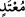

derdi. Velid zengin bir kimse idi, kendisinin dokuz bin miskal gümüşü vardı. Taif’te bir
bahçesi bulunuyordu.
“ /Mu’ted” zulümde haddi aşan demektir. Bir başka ifâdeyle insanlara zulmetmek
sûretiyle hem hakkı ve hem de haddi aşan demektir. Kelimenin bütün kötü ahlâkın
tamamına hamledilmesi mümkündür. Çünkü kötü ahlâkın tümü, aslında orta yolun
sınırının aşılması demektir.
et-Tevilatu’n-necmiyye’de bu kelime “şehvet denizine dalarak, yasakların karanlık
okyanusları içerisinde kaybolarak nefsine zulümde haddi aşan” şeklinde tefsir
olunmuştur.
“ /Esim” çok günahkâr demektir. Bu kelime, sevâbı giderici fiillere isim olarak
kullanılmaktadır. Kâşifî bu kelimeyi “çok günah işlemiş, günahkâr; çok zarar vermiş,
zarar görmüş, ziyankâr” olarak açıklamaktadır.
et-Tevilatu’n-necmiyye’de söz konusu kelime “kötü huylara eğilmek, reddedilmiş
vasıfları istemek sûretiyle çok günah kazanmış kimse” olarak tefsir olunmuştur.
13. Kaba ve haşin, bütün bunlardan sonra bir de soysuzlukla damgalanmış
kimselerden hiçbirine,
“ /Utullin” kelimesi kaba, haşin ve katı demektir. Kelime etimoloji itibariyle
herhangi bir şeyi sert ve katı biçimde sürmek fiilinden türemiştir. Kelimede cebir,
zorluk ve sertlikle çekmek anlamları bulunmaktadır. Kâşifî buna sert yüz ve kötü huy
anlamını verir.
Râğıb’ın ifâdesine göre bu kelime herhangi bir şeyi tam orta yerinden tutmak ve
kahırla çekmek anlamınadır. Tıpkı devenin yularından tutulup sert biçimde çekilmesi
örneğinde olduğu gibi.
Herhangi bir kimse başkalarıyla olan ilişkilerinde katı kalpli, haşin ve sert huylu olur,
ruhâni sıfatları kabul etmeyecek biçimde katılaşmış bulunur ve hakkın karşısında
yumuşamazsa, her türlü mâsiyeti işleme cesâretini kendinde bulur. Kamus’ta “el-utull”
kelimesi çok yiyen, katı ve kaba kişi diye anlatılmıştır.
“Bütün bunlardan başka” yâni bu kişinin bütün çirkin yönlerinin sayılmasının ardından
bir de âyetin deyimiyle o kişi “zenim”dir. Arapçada zenîm demek herhangi bir
topluluktan olmadığı hâlde o topluluğa yapıştırılmış, onlardan olduğu iddiâ edilen,
nesepçe o topluluğa katılan kişi demektir. Böyle bir kişi aslında o toplumun ferdi
değildir. Şu hâlde “zenim” herhangi bir kimsenin kendisinden olduğunu iddiâ ettiği ve
kendine evlâdlık edindiği kişi demektir. Böyle bir kişi gerçekte kendini evlâdlık edinen
insanın oğlu değildir. Nitekim Allah bu konuda şöyle buyurur: “Ve evlâdlıklarınızı da